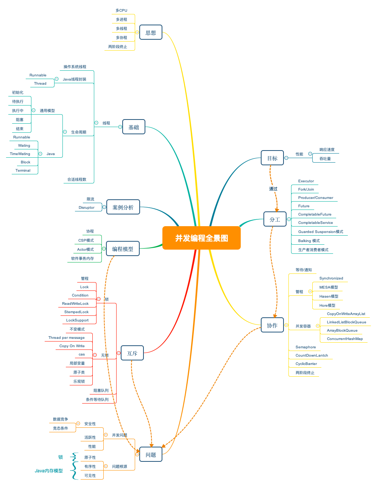

- 00 学习攻略 如何才能学好并发编程？.md
- 00 开篇词 你为什么需要学习并发编程？.md
- 01 可见性、原子性和有序性问题：并发编程Bug的源头.md
- 02 Java内存模型：看Java如何解决可见性和有序性问题.md
- 03 互斥锁（上）：解决原子性问题.md
- 04 互斥锁（下）：如何用一把锁保护多个资源？.md
- 05 一不小心就死锁了，怎么办？.md
- 06 用“等待-通知”机制优化循环等待.md
- 07 安全性、活跃性以及性能问题.md
- 08 管程：并发编程的万能钥匙.md
- 09 Java线程（上）：Java线程的生命周期.md
- 10 Java线程（中）：创建多少线程才是合适的？.md
- 11 Java线程（下）：为什么局部变量是线程安全的？.md
- 12 如何用面向对象思想写好并发程序？.md
- 13 理论基础模块热点问题答疑.md
- 14 Lock和Condition（上）：隐藏在并发包中的管程.md
- 15 Lock和Condition（下）：Dubbo如何用管程实现异步转同步？.md
- 16 Semaphore：如何快速实现一个限流器？.md
- 17 ReadWriteLock：如何快速实现一个完备的缓存？.md
- 18 StampedLock：有没有比读写锁更快的锁？.md
- 19 CountDownLatch和CyclicBarrier：如何让多线程步调一致？.md
- 20 并发容器：都有哪些“坑”需要我们填？.md
- 21 原子类：无锁工具类的典范.md
- 22 Executor与线程池：如何创建正确的线程池？.md
- 23 Future：如何用多线程实现最优的“烧水泡茶”程序？.md
- 24 CompletableFuture：异步编程没那么难.md
- 25 CompletionService：如何批量执行异步任务？.md
- 26 Fork_Join：单机版的MapReduce.md
- 27 并发工具类模块热点问题答疑.md
- 28 Immutability模式：如何利用不变性解决并发问题？.md
- 29 Copy-on-Write模式：不是延时策略的COW.md
- 3 个用户来信 打开一个新的并发世界.md
- 30 线程本地存储模式：没有共享，就没有伤害.md
- 31 Guarded Suspension模式：等待唤醒机制的规范实现.md
- 32 Balking模式：再谈线程安全的单例模式.md
- 33 Thread-Per-Message模式：最简单实用的分工方法.md
- 34 Worker Thread模式：如何避免重复创建线程？.md
- 35 两阶段终止模式：如何优雅地终止线程？.md
- 36 生产者-消费者模式：用流水线思想提高效率.md
- 37 设计模式模块热点问题答疑.md
- 38 案例分析（一）：高性能限流器Guava RateLimiter.md
- 39 案例分析（二）：高性能网络应用框架Netty.md
- 40 案例分析（三）：高性能队列Disruptor.md
- 41 案例分析（四）：高性能数据库连接池HiKariCP.md
- 42 Actor模型：面向对象原生的并发模型.md
- 43 软件事务内存：借鉴数据库的并发经验.md
- 44 协程：更轻量级的线程.md
- 45 CSP模型：Golang的主力队员.md
- 用户来信 真好，面试考到这些并发编程，我都答对了！.md
- 结束语 十年之后，初心依旧.md
3 个用户来信 打开一个新的并发世界
你好，我是王宝令。
很高兴能再次收到用户的来信，一下子还是 3 封，真是受宠若惊。
通过大家的来信、留言，我深刻感受到大家学习的欲望和热情，也很感谢你们能跟着我一起，把并发这么难啃的知识点都“嚼碎了”——“吃下去”——“消化掉”，变成自己的东西。
脚踏实地，才能仰望天空。
来信一：他说，这是一盏明灯，可以带你少走很多弯路，正确前行，野蛮生长。
你好，我是笑笑，17届杭师大计算机毕业的学生，现在一个电商互联网公司做 Java开发。
在没有学习这个专栏之前，我自己也曾读过一些并发编程相关的书，但那时刚毕业，看完后也仅仅是知道了并发的概念、并发产生的原因，以及一些并发工具类的使用，整体处于“了解”阶段，距离“掌握”还很远。所以，看到“极客时间”出并发编程的专栏后，我立马就订阅了。
第一个感受：宝令老师的讲解思路特别清晰，由简入深。为什么会出现这些技术、这些技术带来的影响点以及如何能更合理地使用这些技术等内容，都阐述得清清楚楚。整个专栏下来，宝令老师带我“游览”并看清了并发编程的全貌。
第二个感受：清晰简洁，理论和实践并行。每次读完老师的文章后，先前很多模糊的知识点都变得更加地清晰，比如：
- 可见性是由于在多核时代，每颗CPU都有自己的缓存导致的，具体看《01 | 可见性、原子性和有序性问题：并发编程Bug的源头》；
- 锁要和资源关联起来，一个锁可以锁多个资源，但是一个资源不可以用多个锁，可类比球赛门票的管理，点击温故《03 | 互斥锁（上）：解决原子性问题》；
- Java 线程的生命周期与操作系统线程生命周期的相通点以及区别，可参考《09 | Java线程（上）：Java线程的生命周期》；
- 结合例子来带你理解 Happens-Before 规则，具体看《02 | Java内存模型：看Java如何解决可见性和有序性问题》。- ……
总之 ，十分感谢宝令老师这几个月的付出。想必很多同学都跟我一样，不能说看了专栏我们并发的能力一下子变得多么多么厉害（这也不现实）。但，它绝对是一盏明灯，给我们指明了方向，让我们在并发的道路上少走很多弯路，正确前行，野蛮生长。
宝令回信：
很高兴能够为你答疑解惑，学习最怕的是没问题，只要有问题就一定能找到答案，探索的过程就是提升的过程。也感谢你这几个月的支持和信任！
来信二：他说，于是，我有了自己的“Java并发编程全景图”。
你好，我是华应，互联网行业的一名非著名程序员。
关于并发编程的学习，我也曾多次尝试学习，从不同的切入点或者方法学习过，但都不得要领。 看了宝令老师专栏的试读文章后，我发现每句话都戳中自己学习过程中的痛处，就决定跟着了。
让我印象比较深刻的是，在第一部分“并发理论基础”的最后，老师专门拿出了一篇文章来为大家答疑，每个问题都非常经典，涉及到CPU、缓存、内存、IO、并发编程相关的操作系统层面的线程、锁、指令等知识点，为我打开了并发新世界。同时，我把难啃的知识放在了自己技能全景图中，时时温故知新。
总体来说，学习完这个专栏后，我获益良多，不仅是对并发编程有了系统化的理解，也第一次针对并发编程绘制出了自己的全景图（如下图）。生有涯而学无涯，相信这些知识图谱定能给我指明前进方向，点亮我的技术人生。
真心谢谢宝令老师，希望老师能再出更多的专栏，我们江湖再见！

宝令回信：
系统化地学习很重要，这样遇到问题不会迷茫。感谢你分享的全景图，教学相长，我们互相学习！
来信三：他说，如今每做一个需求，都会对其资源消耗、时间损耗和并发安全有进一步的思考和优化。
你好，我是小肖，在深圳的一家金融公司负责后端业务开发。
想起学并发编程，是因为在找工作时，经常会有面试官问我有没有并发经验，这时我才意识到自己在并发方面的不足。但由于整天沉浸在各种业务代码的CRUD中，而且公司用户数量不大，导致自己接触的并发场景少，完全缺少理论+实战经验。
所以当“极客时间”出了《Java并发编程实战》这门课后，我立马就订阅了，同时也对宝令老师的分享充满了期待。
事实证明，老师分享的知识深度广度让我叹为观止，干货非常之多，许多知识也很贴近实战。比如，在第二部分“并发工具类”的14篇文章里，我跟着学会了如何用多线程并行操作来优化程序执行时间，以及如何用线程通信来让程序执行得更高效。
就这样，从头到尾跟下来后，我收获颇丰！
现在，我也尝试着把我学到的知识点用于项目中，不断优化自己的代码。如今我开始每做一个需求，都会对其资源消耗、时间损耗和并发安全多进行一步思考和优化。这些都为我的项目成功上线起到了重要的保障作用，我的同事也开始夸奖我并发方面的表现突出。这是我最开心和欣慰的地方。
由此，我想感谢宝令老师，是发自内心且由衷地感谢。感谢老师这几个月的一直陪伴，感谢老师分享的知识让我向着理想更进了一步，感谢老师怀揣着对技术的执着之心激励我初心依旧。
宝令回信：
你这么快就能在工作中熟练使用了，这是我最开心和欣慰的地方。学会怎么思考并且在工作中实践，进步一定很快。祝在工作中更上一层楼！
© 2019 - 2023 Liangliang Lee. Powered by gin and hexo-theme-book.